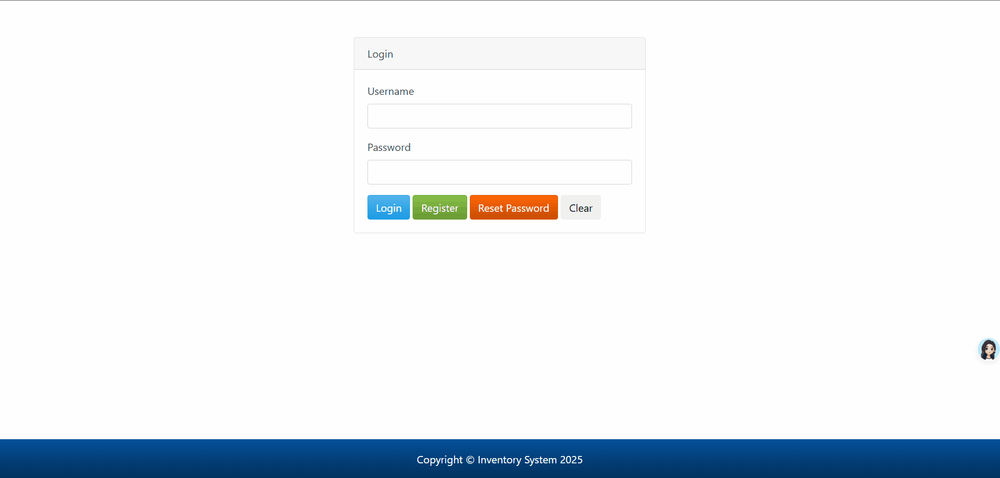
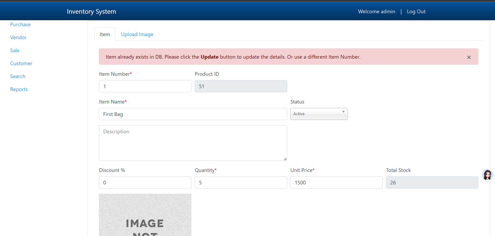
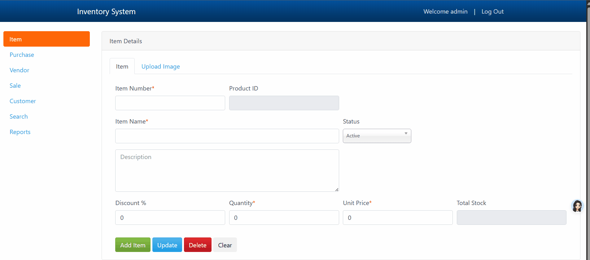
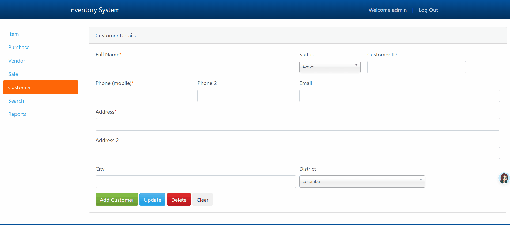
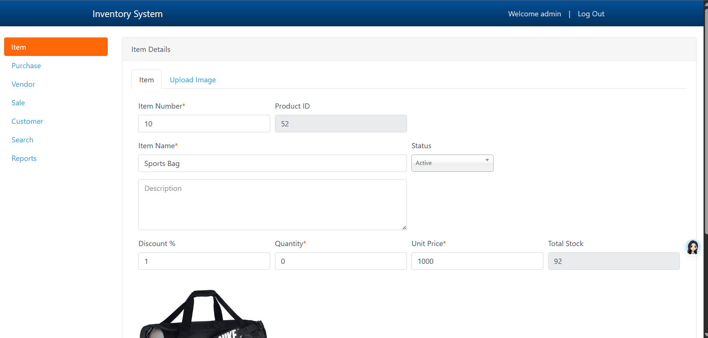
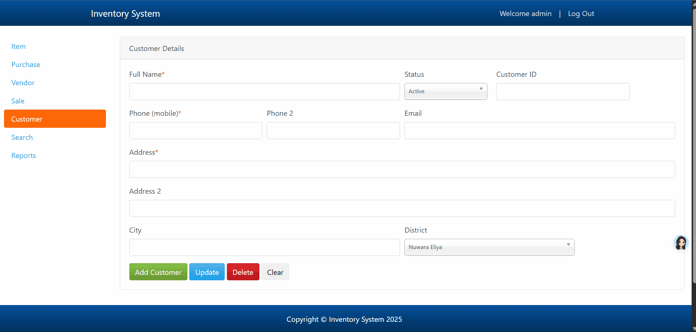
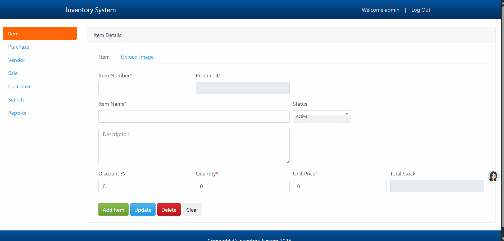

Usability Problems Found
1. Visibility of System Status
Issue: Lack of system overview (e.g., total items, customers).
Description: The system lacks a dashboard or summary page displaying key metrics (e.g., total products, active customers, recent sales). Users must navigate to individual modules to gather basic information.
Impact: Hinders quick decision-making and forces users to manually compile data, wasting time and increasing cognitive load.
2. Match Between System and the Real World
Issue: Technical jargon (e.g., "DB") and grammatical errors in messages.
Description: Error messages use terms like "DB" (database) or phrases with grammatical inconsistencies (e.g., "Item added to DB successfully").
Impact: Non-technical users may misinterpret messages, reducing trust in the system. Grammatical errors also create an unprofessional impression.
3. User Control and Freedom
Issue: No confirmation prompts for irreversible actions (clear data).
Description: Although there is a clear button that enables users to remove the data they have entered, there is no confirmation pop-up that lets users confirm or cancel an activity.
Impact: Accidental clicks can permanently erase critical data, leading to operational disruptions and time-consuming recovery efforts.
Issue: No "Undo" or soft-delete functionality.
Description: Deleted items or sales are removed permanently, with no option to restore them from a trash/recycle bin.
Impact: Users cannot recover from mistakes, forcing manual re-entry of data and increasing frustration.
4. Consistency and Standards
Issue: Non-normalized input fields (e.g., single field for full name/address, phone number).
Description: Fields like "Name" or "Address" are unstructured, allowing free-form text without separate components (e.g., First Name, Street, City). The number input lacks limitation and proper standard.
Impact: Inconsistent data formatting complicates reporting, filtering, and analysis (e.g., sorting by last name or zip code, incorrect contact).
5. Error Prevention
Issue: Error messages displayed at the top of the screen.
Description: Validation errors (e.g., missing fields) appear as a generic list at the page top, disconnected from the problematic input.
Impact: Users may overlook errors, especially on long forms, leading to repeated submission attempts and delays.
Issue: Allows duplicate customer entries without warnings.
Description: The system does not check for existing records during data entry.
Impact: Duplicate entries skew reports, cause inventory inaccuracies, and complicate record management.
6. Recognition Rather Than Recall
Issue: No format hints (e.g., product code formats) or dropdowns for item/customer selection.
Description: Input fields like "Product Code" lack examples (e.g., "PROD-001"), and users must manually type IDs instead of selecting from a dropdown.
Impact: Forces users to memorize codes or switch between screens, increasing errors and slowing workflows.
Issue: No guides or placeholders for user inputs
Description: Input fields, other than its input name (e.g., "Item ID") have no other clues on what to put into the input field.
Impact: New users may be confused as to what to do in those process windows
7. Flexibility and Efficiency of Use

Issue: No responsive sidebar design.
Description: The sidebar remains fixed on smaller screens, obscuring content.
Impact: Mobile/responsive usability suffers, requiring horizontal scrolling.
8. Aesthetic and Minimalist Design
Issue: Cluttered interface with too many visible fields/buttons.
Description: Forms and dashboards display all fields/buttons simultaneously (e.g., "Add," "Edit," "Delete" clustered together).
Impact: Overwhelms users, making it harder to locate critical functions and increasing the likelihood of errors.
Issue: Immediate process window on login (no homepage).
Description: Users land directly on a transactional screen (e.g., "Add Item") after logging in, with no contextual overview.
Impact: New users feel disoriented, and returning users lack quick access to high-priority tasks or summaries.
10. Help and Documentation
Issue: No help section, tooltips, or documentation.
Description: The system lacks contextual guidance (e.g., tooltips for complex fields) or a centralized help portal.
Impact: New or forgetful users struggle to complete tasks, increasing training costs and reducing productivity.
Heuristic Evaluation Workbook
Tasks Used During Evaluation
- Task 1: Log in to the system and navigate to the dashboard.
- Task 2: Search for a specific item using the search bar.
- Task 3: Add a new item to the inventory.
- Task 4: Edit an existing item’s details.
- Task 5: Delete an item from the list.
- Task 6: Generate a report of recent activities.
Conclusion
The evaluation identified several usability issues that impact user satisfaction and efficiency. These issues include lack of general overview dashboard, inconsistent terminology, absence of confirmation prompts, and poor error messaging among others. Addressing these problems will improve the overall user experience, increase operational efficiency, and reduce user frustration. Implementing a more consistent, user-friendly, and informative interface will enhance trust and productivity for all users.